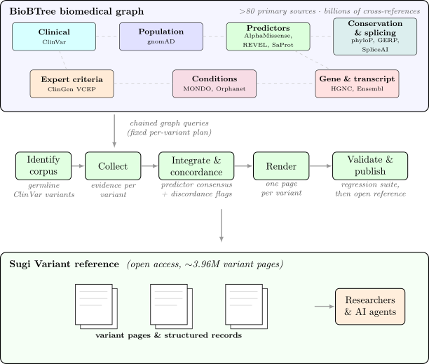
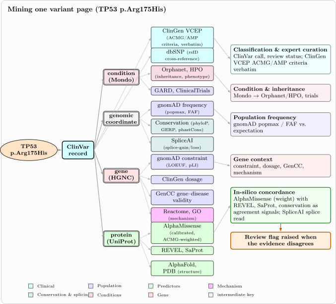

Interpreting a germline genetic variant means assembling evidence that lives in many different places: its clinical classification and associated condition in one database, its population frequency in another, computational predictions of its effect in several more, and the formal evidence criteria an expert panel applied in yet another. Each resource is authoritative within its domain, yet assembling a connected, current per-variant picture takes manual effort, and any consolidated view begins to go stale as the sources update on their own cycles; the effort is largest for the variants of uncertain significance, and the non-coding and mitochondrial variants, that many tools do not cover. This content is increasingly consumed by AI agents as well as people, raising the bar on how correct and current it must be, and language models are an imperfect fit for producing it at corpus scale, fabricating plausible but unsupported statements most often for the rare variants that dominate the long tail. We present Sugi Variant, an openly published per-variant reference for germline human variants built by deterministically mining BioBTree, a graph that unifies more than eighty primary databases into billions of cross-references. Rather than let a model explore the graph at query time, Sugi Variant issues fixed chained-query plans, so every variant is assembled the same way on each run: each value comes straight from the source data and, for a given snapshot, the corpus is reproducible. For each variant it consolidates the ClinVar germline classification and condition, the gnomAD frequency and gene constraint, several calibrated in-silico predictors of variant effect (among them AlphaMissense, REVEL, and a structure-aware protein language model, together with sequence conservation), and the ClinGen ACMG/AMP criteria where an expert panel recorded them. It summarises the in-silico predictors into a consensus and adds an explicit concordance readout stating whether that computational evidence agrees with the clinical classification, flagging, as a quality-control signal for review rather than a reclassification, the cases where it does not. Throughout, the reference describes and aggregates the existing evidence and never computes a classification of its own. Sugi Variant comprises 3,961,230 variants across 18,799 genes, including the non-coding and mitochondrial variants many resources omit, with each record emitted as structured data for programmatic use. It is openly available at https://sugi.bio/variant/.
Interpreting a human genetic variant means assembling evidence that lives in many different places. Its clinical classification and the conditions it is asserted for sit in one database; its population frequency in another; computational predictions of its effect in several more; the formal evidence criteria a variant curation expert panel applied in yet another. Each resource is authoritative within its own domain, yet a clinician or researcher assessing a single variant must visit and reconcile them by hand, and because each is updated on its own cycle, any consolidated view begins to go stale the moment it is written down. Assembling a connected, current, and trustworthy per-variant picture is therefore a recurring effort, and it is most costly for exactly the variants where it matters most: the large and growing set of variants of uncertain significance, and the non-coding and mitochondrial variants that many tools do not cover at all.
This content is increasingly read by machines as well as people. Large language models encode a substantial body of biomedical and clinical knowledge [1], and a growing ecosystem of autonomous agents consumes genomic reference data directly. Both raise the bar on the same two properties: the content must be correct, and, because the data beneath it changes continually, current. Language models are an imperfect fit for producing such content at the scale of an entire variant corpus. Models retain a hallucination surface, producing plausible but unsupported statements, and studies of model-generated medical content have measured high rates of fabricated and inaccurate references [2, 3]; this surface is largest for exactly the rare, sparsely-documented variants that dominate the long tail; grounding a model against authoritative records, for instance through the Model Context Protocol [4], substantially mitigates fabrication, but it does not yield a catalog, because the traversal a model takes through a large graph varies between runs and models, so coverage is neither complete nor reproducible, and the per-variant cost makes rebuilding a corpus on every data refresh impractical.
Several lines of work consolidate variant evidence so that it need not be gathered by hand each time. ClinVar aggregates clinical assertions and their supporting conditions [5]; gnomAD provides population allele frequencies and gene constraint [6]; dbNSFP precomputes and packages many computational predictors for missense variants [7]; and interpretation platforms and multi-source aggregators assemble several of these behind a query interface. These resources resolve much of the fragmentation, but a gap remains for a reference layer built on top of an integrated graph: one that is comprehensive across variant classes, including the uncertain, non-coding, and mitochondrial variants often omitted; deterministic, and therefore reproducible and inexpensive to refresh; and integrated, presenting each variant’s clinical, population, and computational evidence together with an explicit readout of whether those independent lines of evidence agree, in one openly published place that researchers and AI agents can rely on.
We present Sugi Variant, an openly published, per-variant reference for germline human variants produced by deterministically mining BioBTree [8], a biomedical graph database that integrates more than eighty primary sources through billions of cross-references and stays current as those sources release updates. For each variant, a pipeline issues fixed chained graph queries that assemble, every value traced to its source, the ClinVar germline classification and asserted condition, the gnomAD allele frequency and gene constraint, calibrated computational predictors (AlphaMissense, REVEL, SaProt, conservation, and, for splice-region variants, SpliceAI), the ClinGen ACMG/AMP evidence criteria where an expert panel has recorded them, and a cross-source concordance readout that states whether the computational predictors agree with the clinical classification and flags the cases where they do not. Throughout, the reference describes and aggregates the existing evidence and never computes a classification of its own: the concordance readout is a quality-control signal for review, not a reclassification. Because the corpus is a deterministic function of BioBTree’s contents, every variant is presented at uniform breadth and, for a given snapshot, the whole corpus is reproducible and can be regenerated as the sources are re-ingested. Sugi Variant comprises 3,961,230 variants across 18,799 genes, spanning pathogenic and likely-pathogenic, conflicting, uncertain-significance, and benign classifications, and including the non-coding and mitochondrial variants that many resources omit. Section 2 details the mining pipeline, Section 3 presents example variant pages and the breadth of evidence they carry, and Figure 1 shows the overall design.

Sugi Variant is built on the BioBTree knowledge graph [8], consuming it through its API. It traverses the graph by chain queries, which follow cross-reference edges from a starting record through a sequence of datasets, optionally filtering at a step, and return the records reached. Each variant page is assembled by issuing a fixed plan of such queries from one resolved variant. Because the plan is fixed in advance rather than chosen at query time, every variant is traversed along the same chains and assembled the same way on each build, so coverage is uniform across the corpus and, for a given BioBTree snapshot, the build is reproducible. The pipeline (Figure 1) identifies the corpus of variants, collects each variant’s evidence, integrates that evidence and assesses its cross-source concordance, renders each variant as a page, and validates the result before publication; the following subsections describe these phases in turn.
Sugi Variant covers germline human variants that carry a ClinVar clinical classification. ClinVar records several distinct classifications for a variant, and some variants carry, in addition to a germline classification, a somatic clinical-impact or oncogenicity classification asserted for tumours; Sugi Variant reads only the germline classification and its asserted condition, so a variant that carries only a somatic classification is not included. The corpus is enumerated per gene: for each gene, the pipeline lists its ClinVar variants through the graph and admits those whose germline classification is pathogenic, likely-pathogenic, pathogenic/likely-pathogenic, of uncertain significance, conflicting (ClinVar’s “conflicting classifications of pathogenicity”), benign, likely-benign, or benign/likely-benign. This enumeration is not restricted to protein-coding missense variants: non-coding RNA and mitochondrial variants are admitted on the same basis wherever they carry a germline classification.
Together these admit 3,961,230 variants across 18,799 genes (Table 1), of which the majority are of uncertain significance, including 1,526 non-coding-RNA variants (those whose HGVS is expressed in the non-coding n. nucleotide form) and 3,077 mitochondrial (m.) variants that many resources omit.
| Germline classification | Variants | Share |
| Pathogenic / Likely pathogenic | 312,788 | 7.9% |
| Conflicting | 154,083 | 3.9% |
| Uncertain significance | 2,236,650 | 56.5% |
| Benign / Likely benign | 1,257,709 | 31.8% |
| Total | 3,961,230 | — |
Each admitted variant is first resolved to a single canonical ClinVar record, the anchor, which every section of its page then shares. From this anchor, a fixed plan of chain queries assembles the variant’s evidence (Figure 2), each value read directly from its source dataset rather than reconstructed: from ClinVar, the germline classification, the review status and submitter count, and the asserted condition, carried through to its Mondo [9] and Orphanet [10] terms; from gnomAD, the population allele frequency, the grouped-population maximum, and the gene-level constraint; and, for the amino-acid change, the computational predictors AlphaMissense [11], REVEL [12], and SaProt [13], together with sequence conservation [14, 15] and, for splice-region variants, SpliceAI [16]. Where ClinGen variant curation expert panels [17] have recorded a curation, the ACMG/AMP evidence criteria they applied are collected verbatim. A variant that resolves to nothing is recorded and skipped rather than aborting the build.
The evidence types differ in how many variants they apply to. Table 2 reports, for a representative random sample of the corpus, the fraction of variants that carry each type. Every variant carries the ClinVar germline classification by construction, and sequence conservation, being position-based, is available for almost all. The missense predictors (AlphaMissense, REVEL, and SaProt) apply only to missense substitutions and so reach roughly half the corpus; a gnomAD allele frequency is present for the variants observed in the population database, the remainder being absent and therefore rare; an asserted Mondo disease term is recorded for just under half; SpliceAI annotates only splice-relevant positions and so applies to a small fraction; and the ClinGen ACMG/AMP criteria exist only for the small, expert-curated subset a variant curation expert panel has reviewed. This unevenness is intrinsic to the evidence rather than a gap in the pipeline, and it is greatest exactly on the uncertain, non-coding, and mitochondrial variants where the missense predictors fall silent, which is where an integrated view that still carries conservation, frequency, and condition evidence is most useful.
| Evidence type | Coverage |
| ClinVar germline classification | 100% |
| Sequence conservation (phyloP, GERP) | 93.2% |
| REVEL | 61.6% |
| AlphaMissense | 58.9% |
| SaProt | 52.5% |
| gnomAD allele frequency (observed) | 47.6% |
| Asserted condition (Mondo term) | 46.7% |
| SpliceAI (splice-region, Δ ≥ 0.2) | 1.7% |
| ClinGen ACMG/AMP criteria | 0.6% |
The distinguishing step assembles the collected evidence into a single readout and states whether its independent lines agree. Throughout, Sugi Variant follows the ClinGen Sequence Variant Interpretation framework [18] and describes the evidence rather than computing a classification of its own; the concordance readout is a quality-control signal for review, not a reclassification.
Computational predictors are treated as this framework prescribes rather than summed. Because in-silico predictors are not independent, exactly one calibrated tool is read as carrying evidence weight for a variant: AlphaMissense for a missense change, and, for a non-missense change where the missense predictors do not apply, sequence conservation. The remaining predictors (REVEL and SaProt on missense, conservation as a check) are presented as agreement signals that either concur with or dissent from that calibrated call, never as additive votes; SaProt, an unsupervised structure-aware protein language model, is included specifically because it is independent of the ClinVar and HGMD-derived labels that a supervised ensemble such as REVEL is trained on. Its damaging/tolerated read is set at a threshold calibrated against ClinVar: the model is thus independent of ClinVar labels, while this display threshold is not, and because the threshold was fit on an unsplit sample its reported operating characteristics should be read as optimistic. Population rarity is shown but not counted as concordant evidence, and condition names are carried verbatim.
From these signals the page presents an explicit concordance readout, and, where the independent lines disagree, labels the disagreement into a small set of quality-control categories: a pathogenic classification against which the calibrated predictor leans benign; a conflicting classification on which the independent predictors instead agree; a conflicting classification resolved by a loss-of-function signal; a split among the predictors themselves; and, for a variant of uncertain significance, a unanimous predictor lean. These are surfaced as flags for review; consistent with the describe-not-reclassify principle, none of them changes the recorded classification.
Every variant page presents the same canonical sequence of sections in a fixed order, each under a stable anchor identifier; a section for which no data resolves is shown as an explicit “no data” state rather than omitted, so that every page has identical structure and a deep link to any section resolves on every variant. Beyond its sections, each page carries a one-sentence description and a short list of headline facts, both composed by template from the collected values. Every element of a page is produced in this way, by deterministic composition from the record’s data; no part of a page is generated by a language model. Each page is written as a Markdown document with a machine-readable metadata header and a schema.org record, so that programmatic consumers, including AI agents, can read the same content the page presents. To make each variant addressable by the identifiers people actually use, a resolution index maps a variant’s HGVS expressions, rsID, genomic coordinate, and canonical page slug to its ClinVar record, so that a query in any of these forms resolves to the same page.
Validation is layered, and begins upstream: BioBTree re-runs over a thousand test cases on every release to check the integrity of the underlying data and its cross-references [8]. On top of that, Sugi Variant is checked by a deterministic regression suite that samples variants stratified across variant type and classification, and, for each, verifies a set of invariants: that the page resolves and renders, that the displayed classification and review status match an independent query of the ClinVar summary service, that no missense predictor is shown for a variant type it does not score (for example, that a non-coding variant carries no protein constraint), and that a variant of uncertain or benign significance is described without pathogenic framing. The suite additionally carries a set of canonical variants whose facts are known independently of the pipeline, and a set of negative controls confirming that the checks fail on deliberately corrupted pages, so that a passing run is evidence the checks have force rather than that nothing was tested. Because the corpus is a deterministic function of BioBTree’s contents, the validated reference is regenerated in full as BioBTree re-ingests its sources, so its currency tracks the underlying databases rather than a manual release cycle.

We illustrate the reference through four variants chosen to span its breadth and the concordance readout that is its distinguishing feature: a variant on which every line of evidence agrees, one on which they do not, and two from classes many resources omit. Every variant follows the same page contract; these are representative slices, not special cases.
The page for the TP53 missense variant p.Arg175His opens with a deterministic lead composed from the collected fields, and its at-a-glance figures are read directly from the source: it is classified Pathogenic, reviewed by an expert panel (a three-star review status), and asserted for Li-Fraumeni syndrome, and it is very rare in the population (a gnomAD grouped-population maximum frequency of 1.5 × 10−5). The computational evidence is presented as Section 2.3 prescribes: AlphaMissense, the calibrated missense predictor, calls the variant likely-pathogenic (0.986), and REVEL (0.922) and SaProt (a log-likelihood ratio of −15.6) are shown as concurring agreement signals rather than additional votes; all three lean damaging, concordant with the pathogenic classification. The page also carries, verbatim, the ACMG/AMP criteria the ClinGen TP53 expert panel applied (PM2_Supporting, PP1_Moderate, PS3, PS4_Moderate, PM1, and PP3). This is the common case: a well-studied variant on which clinical, population, and computational evidence agree, assembled in one place.
The PTEN missense variant p.Pro38Ser is the case the concordance readout is built for. It is classified as of uncertain significance, and, as with the TP53 example, that classification is an expert-panel one: the ClinGen PTEN expert panel recorded it as uncertain, applying PM2_Supporting, PS3_Moderate, PP2, and PP3. The variant is absent from gnomAD. Yet all three computational predictors lean damaging: AlphaMissense (0.9998) and REVEL (0.957) strongly, and SaProt (log-likelihood ratio −10.3) only narrowly, just past its calibrated damaging threshold of −10.0, so its contribution to the unanimous lean is marginal. The page holds the recorded uncertain classification unchanged and surfaces this tension as a quality-control flag: the computational predictors unanimously lean damaging on a variant the clinical record leaves uncertain, a signal for review, not a reclassification. The distinction is the point. The expert panel held the variant at uncertain despite the predictor lean, because the evidence a panel weighs (the strength of functional data, gene-specific criteria) is not captured by predictor scores alone; Sugi Variant therefore makes the disagreement visible without overriding either line of evidence, so that a reviewer can see, in one place, both that the panel’s call is uncertain and that the independent computational evidence is not.
A large class of clinically important variants cannot be scored by the missense-predictor stack at all, and Sugi Variant carries them on the same page contract rather than omitting them. The mitochondrial variant m.3243A>G in MT-TL1, classified Pathogenic by the ClinGen Mitochondrial Diseases expert panel and asserted for mitochondrial disease, lies in a mitochondrial transfer-RNA gene; its page presents the clinical and population evidence, the expert-panel criteria (PM6_Strong, PP1_Moderate, PS4, and PP3), and the mitochondrial mode of inheritance, with the missense predictors marked as inapplicable rather than left blank. The non-coding-RNA variant n.72A>G in RMRP, classified pathogenic/likely-pathogenic and asserted for anauxetic dysplasia, is similarly outside the predictors’ scope; its page presents classification, condition, and population frequency together with the conservation signal where it is available. Its grouped-population maximum frequency of 1.4 × 10−3 understates its local frequency, since n.72A>G is a founder variant for cartilage-hair hypoplasia, reaching several per cent in the Amish and near one per cent in Finns, so the per-population values the page also carries matter more than the aggregate. Both variants resolve for exactly the cases that per-protein tools return nothing for.
Because each record is emitted as machine-readable structured data, it can also serve as a grounding source for a language model answering a question about a variant, a setting in which a closed-book model is otherwise prone to fabricate plausible but unsupported facts, most often for the rare variants sparsely represented in their training data [2, 3], and in which grounding against authoritative records reduces such fabrication [4, 19]. We ran a paired evaluation over two frontier models on a stratified sample of variants, comparing a closed-book arm, a web-search arm, and an arm additionally given the Sugi Variant record, with answers graded deterministically against gnomAD and ClinVar. Two results follow. First, the closed-book model is unreliable on variant facts: it recovered essentially none of the population allele frequencies and only a few per cent of the classifications, and grounding, of either kind, removes this failure. Second, once the record and a live web search are both available, they are statistically indistinguishable in accuracy: a capable model with web tools recovers these facts about as well as it does from the curated record, on both the common and the rare tail. The value of the record for grounding is therefore not higher accuracy but determinism and cost: it returns the same facts on every run, where a web search varies between runs and models, and it supplies them in a single lookup at lower token cost than assembling them across several searches (about a quarter less in our runs). We report this as a demonstration of utility rather than a benchmark.
Sugi Variant mines BioBTree deterministically into a per-variant reference for germline human variants. Each page is assembled by issuing a fixed plan of chain queries and rendering the records they return, and the clinical, population, and computational evidence gathered along the way is presented together with an explicit readout of whether its independent lines agree. We took this deterministic route for what a reference most needs: each value is exactly what the source data records, every variant is presented at the same breadth, and, for a given BioBTree snapshot, the corpus is reproducible and inexpensive to regenerate as the sources are refreshed. The result, as the worked examples illustrate, is a page that consolidates a variant’s scattered evidence in one place and states plainly whether that evidence is concordant.
The reference describes and aggregates existing evidence rather than producing a new interpretation, and this is a deliberate boundary, not an omission. In-silico predictors are not statistically independent, so the ClinGen framework the pipeline follows [18] treats one calibrated predictor as carrying evidence weight and the others as agreement signals rather than summing them; Sugi Variant presents them exactly this way, and the concordance readout it derives is a quality-control flag for review, never a computed classification. The PTEN p.Pro38Ser example shows why this matters: an expert panel held the variant at uncertain while every predictor leaned damaging, and the value of the reference is to make that disagreement visible in one place without overriding either line of evidence, so a reviewer sees both. Where evidence is simply absent, such as the missense predictors on a mitochondrial transfer-RNA or a non-coding-RNA variant, the page shows an honest empty rather than a missing field, and carries the variant on the same contract as any other.
Several established resources also consolidate variant evidence: ClinVar aggregates clinical assertions [5], gnomAD provides population frequencies and constraint [6], dbNSFP packages computational predictors for missense variants [7], and interpretation platforms assemble several of these behind a query interface. These are valuable and offer much that Sugi Variant does not. In turn, Sugi Variant brings a variant’s clinical, population, and computational evidence into one deterministically-assembled view, adds an explicit cross-source concordance readout, extends coverage to the uncertain, non-coding, and mitochondrial variants often omitted, and is reproducible and refreshable from a single integrated graph, with each record emitted as structured data for programmatic use. Its contribution is this consolidation, coverage, and reproducibility rather than any new predictive signal, and on those terms it is a complementary reference.
Sugi Variant aggregates existing, largely public sources; its accuracy for any single value is therefore inherited from the source, and its contribution is integration, coverage, and reproducibility rather than new evidence about a variant. By design it does not resolve variants of uncertain significance: it surfaces the evidence and flags disagreement, but records the source classification unchanged, and the concordance flags are review signals whose calibration to clinical outcome we do not claim. Coverage is scoped to germline variants that carry a ClinVar germline classification; somatic clinical-impact and oncogenicity interpretations, and variants absent from ClinVar, are out of scope. For non-missense and non-coding variants the computational layer is necessarily thin, because the calibrated predictors score amino-acid substitutions only, so for those classes the page rests on clinical and population evidence and conservation where available. Finally, the grounding result is a small pilot on two models and a single run; it demonstrates the utility of the structured record as a grounding source but is not a powered evaluation, which we leave to future work.
Several directions would extend Sugi Variant. Because the reference is a deterministic function of BioBTree and inexpensive to rebuild, we plan to regenerate it on a regular cadence so that it tracks the underlying sources as they release updates. The grounding demonstration invites a powered evaluation of the reference as a grounding source for agentic variant question-answering, with the stratified, deterministic scoring the pilot prototypes. Separately, the temporal record of how classifications change over successive ClinVar releases supports a benchmark for variant reclassification, which we develop in a companion report [20]. Finally, the same deterministic mining can extend the page contract with further curated evidence as it becomes available, within the same reproducible design.
Sugi Variant is openly available at https://sugi.bio/variant/, where every variant has a stable, browsable page. The build pipeline is open-source software released under the MIT license, and can be deployed locally. Sugi Variant is built on BioBTree [8], the biomedical graph it mines, and can be regenerated as that graph is refreshed.
The pipeline software is MIT-licensed. The published pages aggregate content from the underlying sources under their respective terms: ClinVar is public domain and gnomAD is released under CC0, while AlphaMissense predictions are CC BY-NC-SA and REVEL is restricted to non-commercial use. Accordingly, the reference is provided for viewing and programmatic access rather than as a redistributable bulk dataset of third-party scores; a local deployment regenerates each source’s content from that source under its own license.
K. Singhal, S. Azizi, T. Tu, S. S. Mahdavi, J. Wei, H. W. Chung, N. Scales, A. Tanwani, H. Cole-Lewis, S. Pfohl, et al. “Large language models encode clinical knowledge”. In: Nature 620.7972 (2023), pp. 172–180. doi: 10.1038/s41586-023-06291-2.
M. Bhattacharyya, V. M. Miller, D. Bhattacharyya, and L. E. Miller. “High Rates of Fabricated and Inaccurate References in ChatGPT-Generated Medical Content”. In: Cureus 15.5 (2023), e39238. doi: 10.7759/cureus.39238.
W. H. Walters and E. I. Wilder. “Fabrication and errors in the bibliographic citations generated by ChatGPT”. In: Scientific Reports 13 (2023), p. 14045. doi: 10.1038/s41598-023-41032-5.
X. Hou, Y. Zhao, S. Wang, and H. Wang. Model Context Protocol (MCP): Landscape, Security Threats, and Future Research Directions. Mar. 2025. doi: 10.48550/arXiv.2503.23278.
M. J. Landrum et al. “ClinVar: improving access to variant interpretations and supporting evidence”. In: Nucleic Acids Research 46.D1 (2018), pp. D1062–D1067. doi: 10.1093/nar/gkx1153.
S. Chen et al. “A genomic mutational constraint map using variation in 76,156 human genomes”. In: Nature 625 (2024), pp. 92–100. doi: 10.1038/s41586-023-06045-0.
X. Liu et al. “dbNSFP v4: a comprehensive database of transcript-specific functional predictions and annotations for human nonsynonymous and splice-site SNVs”. In: Genome Medicine 12 (2020), p. 103. doi: 10.1186/s13073-020-00803-9.
T. Gür. BioBTree v2: Grounding LLM Responses with Large-Scale Structured Biomedical Data. 2026. doi: 10.5281/zenodo.18962899.
N. A. Vasilevsky, N. A. Matentzoglu, S. Toro, J. E. Flack, H. Hegde, D. R. Unni, G. F. Alyea, J. S. Amberger, L. Babb, J. P. Balhoff, et al. “Mondo: Unifying diseases for the world, by the world”. In: medRxiv (2022). doi: 10.1101/2022.04.13.22273750.
S. Maiella, A. Rath, C. Angin, F. Mousson, and O. Kremp. “Orphanet and its consortium: where to find expert-validated information on rare diseases”. In: Revue Neurologique 169 (2013), S3–S8. doi: 10.1016/S0035-3787(13)70060-3.
J. Cheng et al. “Accurate proteome-wide missense variant effect prediction with AlphaMissense”. In: Science 381.6664 (2023), eadg7492. doi: 10.1126/science.adg7492.
N. M. Ioannidis et al. “REVEL: An Ensemble Method for Predicting the Pathogenicity of Rare Missense Variants”. In: The American Journal of Human Genetics 99.4 (2016), pp. 877–885. doi: 10.1016/j.ajhg.2016.08.016.
J. Su, C. Han, Y. Zhou, J. Shan, X. Zhou, and F. Yuan. “SaProt: Protein Language Modeling with Structure-aware Vocabulary”. In: The Twelfth International Conference on Learning Representations (ICLR). 2024.
K. S. Pollard, M. J. Hubisz, K. R. Rosenbloom, and A. Siepel. “Detection of nonneutral substitution rates on mammalian phylogenies”. In: Genome Research 20.1 (2010), pp. 110–121. doi: 10.1101/gr.097857.109.
E. V. Davydov, D. L. Goode, M. Sirota, G. M. Cooper, A. Sidow, and S. Batzoglou. “Identifying a High Fraction of the Human Genome to be under Selective Constraint Using GERP++”. In: PLoS Computational Biology 6.12 (2010), e1001025. doi: 10.1371/journal.pcbi.1001025.
K. Jaganathan et al. “Predicting Splicing from Primary Sequence with Deep Learning”. In: Cell 176.3 (2019), pp. 535–548. doi: 10.1016/j.cell.2018.12.015.
H. L. Rehm et al. “ClinGen — The Clinical Genome Resource”. In: New England Journal of Medicine 372.23 (2015), pp. 2235–2242. doi: 10.1056/NEJMsr1406261.
V. Pejaver et al. “Calibration of computational tools for missense variant pathogenicity classification and ClinGen recommendations for PP3/BP4 criteria”. In: The American Journal of Human Genetics 109.12 (2022), pp. 2163–2177. doi: 10.1016/j.ajhg.2022.10.013.
Q. Jin et al. “GeneGPT: augmenting large language models with domain tools for improved access to biomedical information”. In: Bioinformatics 40.2 (2024), btae075. doi: 10.1093/bioinformatics/btae075.
T. Gür. ReVUS: A Temporal-Holdout Benchmark for the Reclassification of Variants of Uncertain Significance. Preprint, https://github.com/tamerh/ReVUS. 2026.